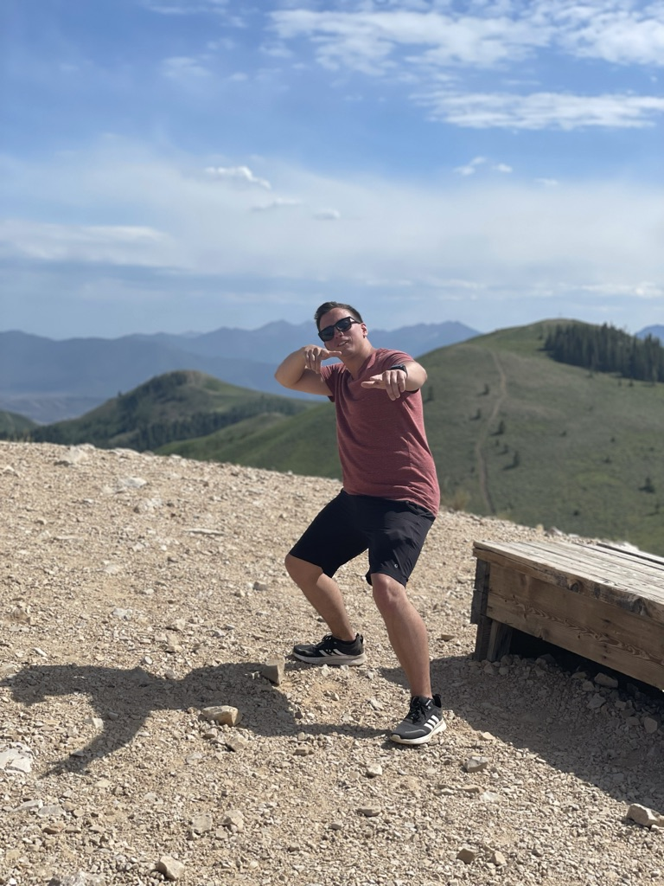

My name is James, I'm from Keller, TX and have lived there/in the surrounding area most of my life. I've played guitar for more than 10 years, and played in a band for most of that time. The band was initially called The Water Broke My Sandcastle and was later changed to The Golden Owls. We played together for nearly 10 years. After a long period of job hopping I have begun my journey into the world of software development.